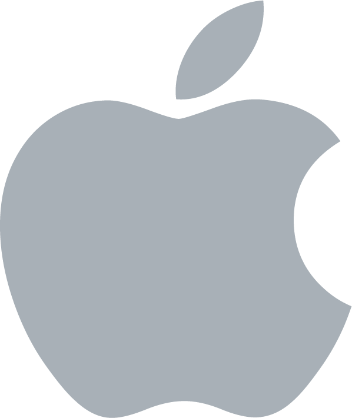

"La historia de Android comenzó en octubre de 2003,
mucho antes de que se usara ampliamente el término
teléfono inteligente y varios años antes de que Apple
anunciara su primer iPhone e iOS. Android Inc se fundó en Palo Alto,
California. Sus cuatro fundadores fueron Rich Miner, Nick Sears, Chris White y Andy Rubin"
este ha conseguido despues de su creación diferentes actualizaciones que sin duda han
mejorado la experiencia de los usuario.
"La historia de Android comenzó en octubre de 2003,
mucho antes de que se usara ampliamente el término
teléfono inteligente y varios años antes de que Apple
anunciara su primer iPhone e iOS. Android Inc se fundó en Palo Alto,
California. Sus cuatro fundadores fueron Rich Miner, Nick Sears, Chris White y Andy Rubin"
este ha conseguido despues de su creación diferentes actualizaciones que sin duda han
mejorado la experiencia de los usuario.
la Version mas reciente de Android es la: 12
 "Windows 10 es la nueva versión del sistema operativo de Microsoft, que llega para intentar redimir los errores de Windows 8, y hacer la experiencia de uso mucho más familiar y tradicional para el usuario de teclado y ratón, trayendo de regreso varias características que muchos extrañaban, e incorporando nuevas."
"Windows 10 es la nueva versión del sistema operativo de Microsoft, que llega para intentar redimir los errores de Windows 8, y hacer la experiencia de uso mucho más familiar y tradicional para el usuario de teclado y ratón, trayendo de regreso varias características que muchos extrañaban, e incorporando nuevas."
Version mas actual: Windows 11 face beta

"El 24 de enero de 1984, Apple Computer Inc. introdujo la computadora personal Macintosh, con el modelo Macintosh 128K, el cual incluía el sistema operativo Mac OS, conocido en esa época como System Software.A la Macintosh a menudo se le atribuye la popularización de las interfaces gráficas de usuario"
Ultima version de sistema operativo mac os 11
 "Era el año 1991 y Linus Torvalds ,que en aquel entonces era un estudiante de informática de la Universidad de Helsinki, empezó a programar las primeras líneas de código de un sistema operativo(finalmente llamado LINUX ) como una afición y sin poderse imaginar la gran repercusión que traería."
"Era el año 1991 y Linus Torvalds ,que en aquel entonces era un estudiante de informática de la Universidad de Helsinki, empezó a programar las primeras líneas de código de un sistema operativo(finalmente llamado LINUX ) como una afición y sin poderse imaginar la gran repercusión que traería."
Existen 31 distribuciones de linux